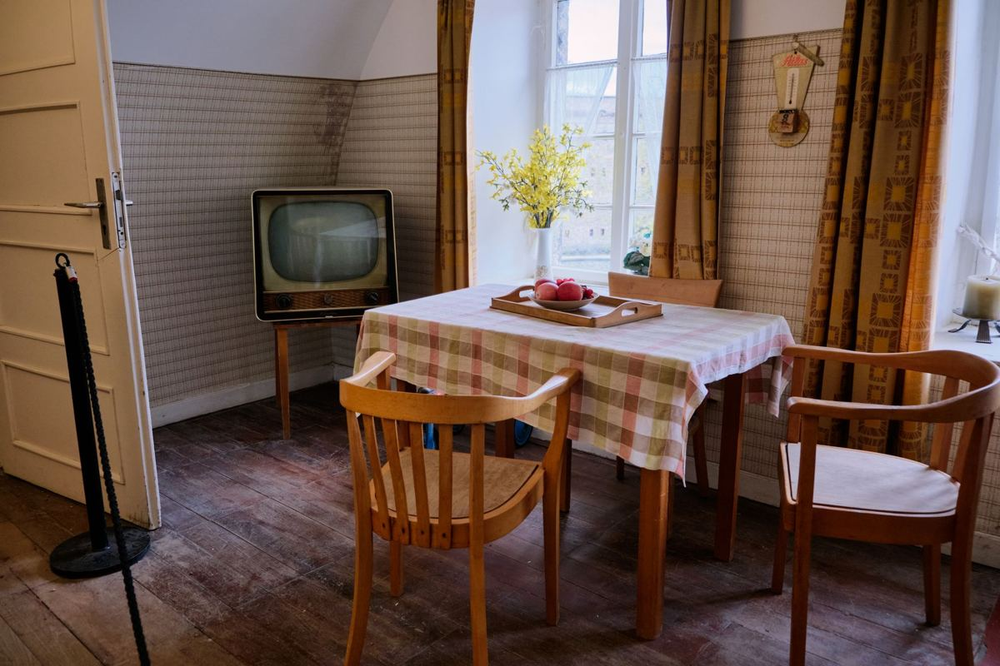

A house you are keeping gets cleared differently than a house you are selling. Nothing external sets the date, so the decision that matters is which rooms have to be usable first and what physically leaves to make that true. Everything else can wait, and some of it legally has to.

That last part is worth knowing before the first trash bag.
Why the houses that stay in the family are the ones that sit
A sale forces the issue. There is a photo date, a closing, and a buyer who walks the property the morning of, and those dates drag the work out of people whether they are ready or not.
An inherited house nobody is selling has none of that. One sibling has a key, someone is paying the electric bill, the mail gets forwarded, and the plan is to deal with it in the spring. Then it is the next spring. We get called to houses that have been in that state since the funeral two years ago, and the family is not lazy. There was simply never a date.
So make one, and make it small. Not clear the house. One room, usable, by a specific Saturday. The order below is built around that.
What has to wait on paperwork
Before anything goes on a trailer, understand that some of what is in the house may not be yours to throw out yet.
If the estate is going through probate, the executor or administrator controls what happens to the property until the court says otherwise, and heirs who have not been formally named do not get to clear it on their own judgment. The Texas State Law Library keeps a plain-language guide to probate that is worth twenty minutes before you start. Where there is no will, the same library's wills and directives material explains why the estate may be headed somewhere other than where the family assumed.
In practice that means three categories stay in the house until someone with authority says otherwise. Anything a will names specifically. Anything more than one person has asked about. And every piece of paper, which is its own pass, described below.
None of that stops you from hauling a rotted mattress or a broken washer. It stops you from hauling the dining set your aunt mentioned.
The order that works
Paper comes first. Family only, no crew, no volunteers. Every drawer, filing cabinet, shoebox, and the inside cover of anything that looks like a Bible. You are looking for deeds, titles, tax records, insurance policies, military discharge papers, and account statements. Put it all in one box and stop sorting it. Sorting it is a different week.
Then the room you actually need. Pick the one that makes the house usable, which for most families is a bedroom or the kitchen. Clear it completely, and clear it to empty rather than to tidy.
Third is the obvious no. Things nobody will claim and nobody would take: soaked or stained mattresses, broken recliners, dead appliances, the exercise equipment in the spare room, the patio furniture the sun destroyed. This is usually most of the weight in the house and none of the emotional load.
What is left comes last. Now the family can talk about the hutch without the house being full of trash while they do it.
Do not start in the garage or the attic. Both feel productive because they are full, and both are the two spaces you do not need to use this month. Families burn an entire weekend in a garage and go home with the bedroom still unusable. Start where you will sleep or eat.
What we take on these jobs
The work looks like any other cleanout, which is the point. Furniture of every kind, including the pieces that will not go down the stairs intact, which is covered in old furniture removal and getting it out. Mattresses and box springs. Appliances, including a fridge that has been off long enough that nobody wants to open it. Televisions and electronics. Carpet and padding when the family is pulling it. Whole garages, whole attics, whole sheds. Yard debris when the property has been sitting.
Usable furniture and appliances go to local donation partners rather than the landfill wherever they can be used, and metal and cardboard go to recyclers. Habitat for Humanity's ReStore network takes furniture, cabinets, doors and working appliances directly as well, and if you would rather run a load there yourself before we come, we will tell you what is worth the trip.
What we will not put on a trailer is household hazardous waste, and inherited houses are full of it. Paint from a 1990s repaint, stain, thinner, motor oil, gasoline in a can in the garage, pesticide, pool chemicals, propane tanks. Those go to your city's household chemical collection program, and the EPA's overview of household hazardous waste explains why the can in the garage is not ordinary trash. The full line on what loads and what does not is in what junk removal will and will not take.
Doing part of it yourself first
If the house is in a city with bulky collection and you have time, use it. Plano publishes its rules under bulky waste collection and Frisco under bulk trash pickup, and putting two or three items out on the right week costs the estate nothing. We would rather say that than take a small job the city would have done free.
What sends families to us instead is volume and stairs. A whole-house clearing is far past what any city will take at a curb, the excluded lists usually catch exactly the items that fill these houses, and there is often nobody in the family who can carry a sleeper sofa down a flight.
How the job runs
Send photos, room by room, and tell us plainly which rooms are in and which are off limits. Off limits is common on these jobs and it is easier for everyone when it is said up front rather than discovered.
A crew comes out, walks the house, and gives you a firm number before anything is lifted, disposal included. The quote is the bill. They will work room by room in the order you set, and they will stop and ask rather than guess when something looks like it might matter. Our own crews do this work, not gig labor hired off an app that morning, which is the reason we are comfortable sending people into a family home at all. If you are handling the house from another state, clearing a house when you live somewhere else covers access, authority and the photo record.
We run seven days a week across the northern suburbs, including Plano, Frisco, Allen, McKinney, Richardson, Little Elm, Prosper, The Colony, Wylie and Fairview. Call before noon and the same afternoon is typical, though typical is the honest word rather than a promise. The service page for this work is estate cleanouts, and you can send us photos whenever the family is ready.
Frequently asked questions
Can we clear the house before probate is finished?
Sometimes, and it depends on who has authority and what the will says. The safe rule is that obvious trash can go, anything named in a will or claimed by more than one person waits, and you ask the executor or the estate's attorney before a full clearing.
Do we have to be there the whole time?
No, but somebody should be there for the walkthrough and the quote, and at the start of the first room. After that plenty of families leave and come back. Tell us what is off limits in writing before we start.
We only want two rooms done. Is that too small?
No. Two rooms is a normal job, and on a house the family is keeping it is often the smarter way to do it. Clear what you need now and call us again when the next part is ready.
What happens to the furniture that is still good?
Usable furniture and appliances go to local donation partners where they can be used, and metal and cardboard go to recyclers. Our stated goal is to keep more than half of every load out of the landfill.
Will you take the paint and the gas can in the garage?
No. Those go to your city's household chemical collection program, which most cities here run free for residents, and we will point you to yours.
A house that stays in the family is not on anybody's clock, which sounds like a relief and turns out to be the problem. Pick one room and a date. The rest of what we haul is on the services page, and there is no rush on our end.